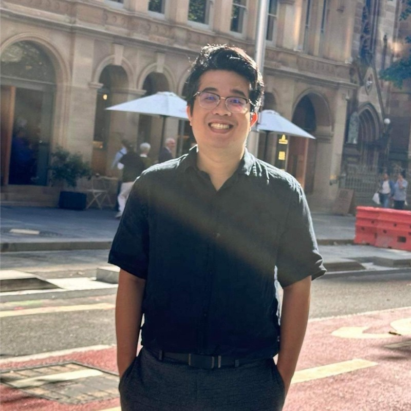
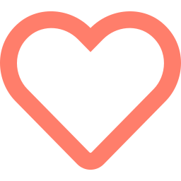
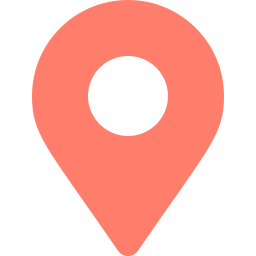

TERRANSOUL
You need a staff?
A companion?
A virtual friend?
Meet a real, human-like companion that lives inside your computer — remembers you, grows with you, and does your daily work alongside you.
WHO I AM
Hi, I'm Darren Dat Bui
Founder of TerranSoul
I'm a Western Sydney builder on a mission: to make technology feel human.
Since I was a kid I've had a dream that AI could become a friend to people and grow with them. That dream led me to spend the past 12 years building my expertise as a Software Engineer, became a Principal Software Architect. Today I'm turning that vision into TerranSoul, with help from a small group of collaborators along the way.

I build it myself
A working desktop app — not just an idea.

Solo, scrappy, local
Made in Western Sydney, for everyone.

Driven by people
Technology that cares about you.
THE PROBLEM
We spend hours every day with our devices — yet they stay a cold tool.

It forgets you
Every app starts from zero. No memory, no relationship, no growth.

It doesn't help
You still do the dull, repetitive computer chores by hand.

It's lonely
Screens connect us to everything and leave many of us isolated.
WHAT MAKES IT DIFFERENT
Three things no ordinary app does
Lives & grows with you
Real, lasting memory. It learns your habits, your style, your world — and gets better the longer you're together.

Sees & speaks to you
An embodied avatar with a face and a voice. You don't type at it — you talk with it, like a real companion.
Actually does the work
It runs tasks on your computer — email, files, research, the daily chores — so you don't have to.
Runs on your own machine. Your companion, your memories, your data — private and yours, not sitting on someone else's server.
BUILT IN WESTERN SYDNEY, FOR OUR COMMUNITY
Why this matters here
Companionship for the isolated
An always-present, patient companion for older residents, people living alone, and anyone who finds technology hard.
Levels the playing field
Affordable, private AI help for small businesses, students and families — not just big companies with big budgets.

Keeps talent & ownership local
A homegrown product built in Western Sydney, showing the next generation that world-class tech can start right here.
Private by design
It runs on the user's own computer — important for families, elders and anyone wary of sharing their life with the cloud.